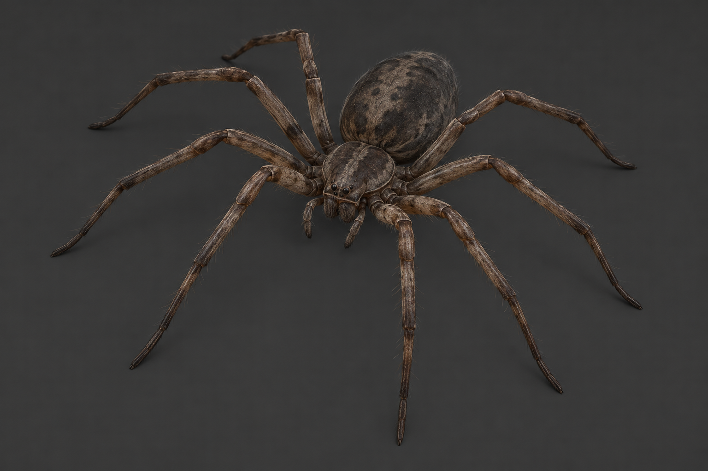
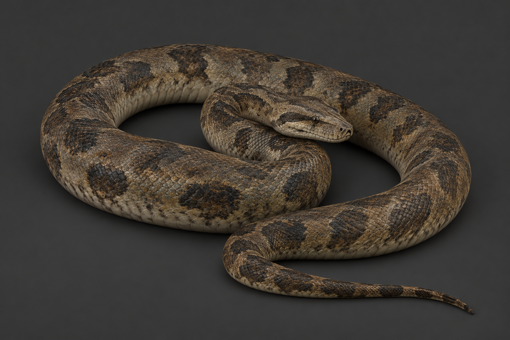
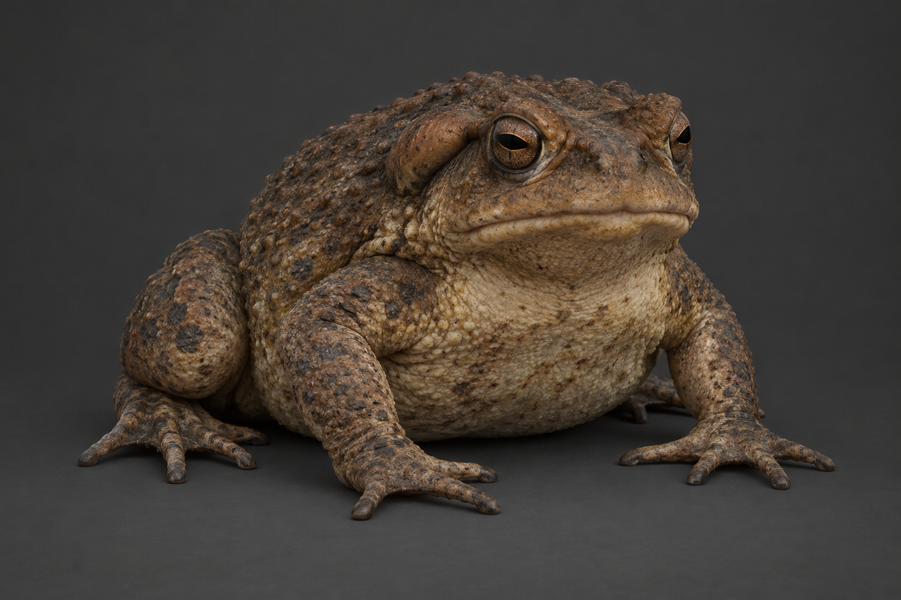
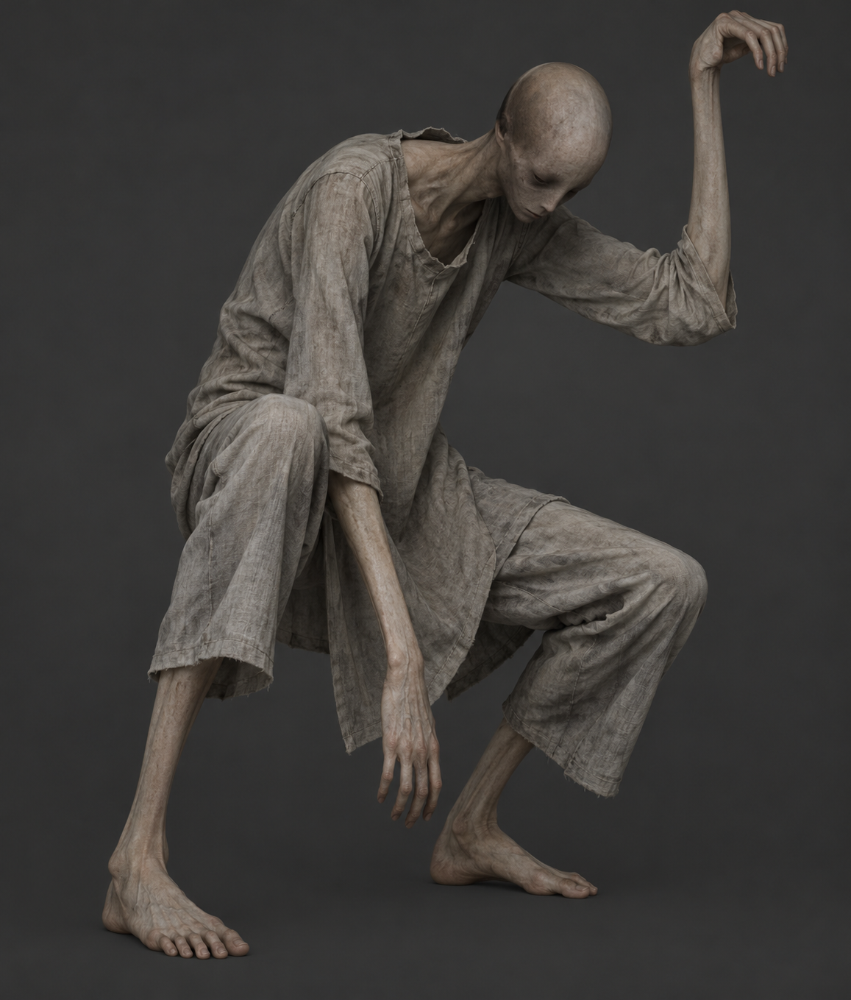
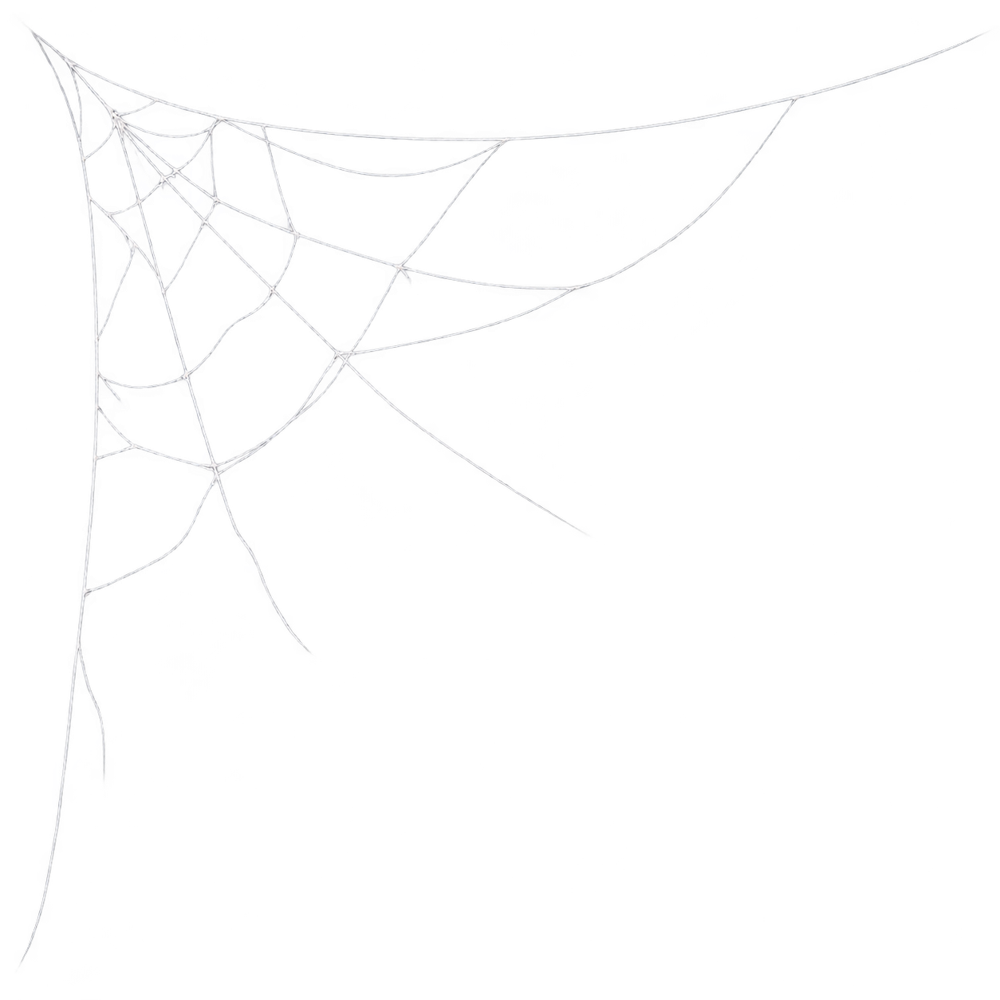

第一轮：长足、盘绕、凝视、折叠。保持旧住宅的灰褐材质，优先轮廓与遮挡。以下造型图已确认，四件静态模型均已生成并检查。点击图片查看输入图，或打开真实 3D 预览。

腿展约 0.50 m；优先 B09 灰盒替换

盘绕占位约 0.65×0.55 m；身体长度另核验

长约 0.38 m；只放侧翼或已有容器内

展开约 2.35 m；只作静态侧翼/高处候选

0.8–1.2 m 墙角薄片；不送 Tripo
先补 B09 天花板蜘蛛与墙角蛛网；蛇、蟾蜍、折身者随后。下一组预留蜈蚣／水蛭、茧囊／蜕皮、头发／根须、门缝眼睛。每个房间保留一个主恐惧物，避免杂烩。